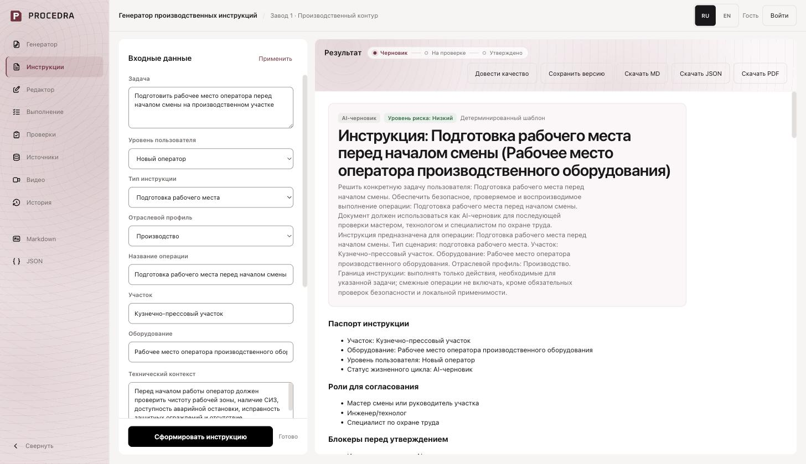

Healthtech / Product development
MedAI
Co-founder experience across product architecture, analytics, partner communication, and grant work. Listed as an author of the registered software.
Read the case study →AI Product Engineer
I build document-intensive AI workflows with structured output, source traceability, and human review.
Hands-on engineering, product research, and grant-backed development.
Featured / Industrial AI
From an operational request and reference documents to a structured instruction draft that an expert can review.

I designed and developed the workflow end to end: document retrieval, structured output, source context, editing, review, version history, and execution checklists.
A controlled demonstration prototype, not a production deployment. Generated instructions require qualified expert review. Application source remains private.
Python / FastAPI / Pydantic / SQL / Retrieval / Evaluation
Healthtech / Product development
Co-founder experience across product architecture, analytics, partner communication, and grant work. Listed as an author of the registered software.
Read the case study →Document AI / Computer vision
Contributed preprocessing and recognition experiments to a larger technical-drawing project. Public reference code includes a runnable synthetic preprocessing demo and tests.
Explore the code →Improved HubSpot object-type compatibility, GitHub pagination, and API version-header handling.
Merged pull request →Corrected environment-flag parsing for integrations and provider configuration.
Merged pull request →Experience across healthtech, industrial AI, and early-stage digital products: market research, competitor analysis, MVP definition, partnerships, and grant applications.
Currently pursuing a master's in Computer Science and Engineering through the Digital Ural program, following a bachelor's in Architecture and Civil Engineering.